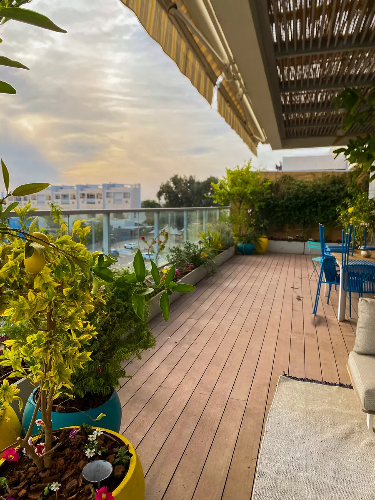
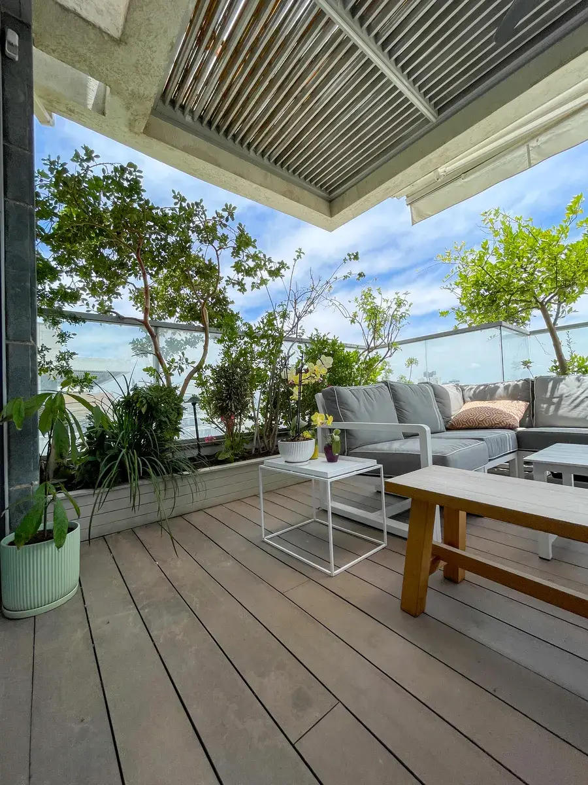
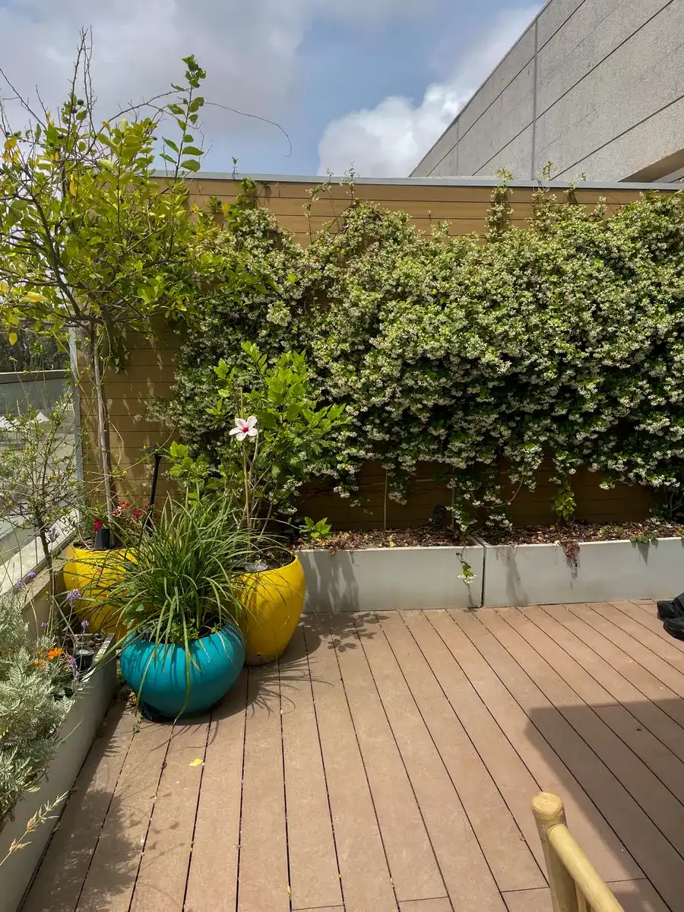
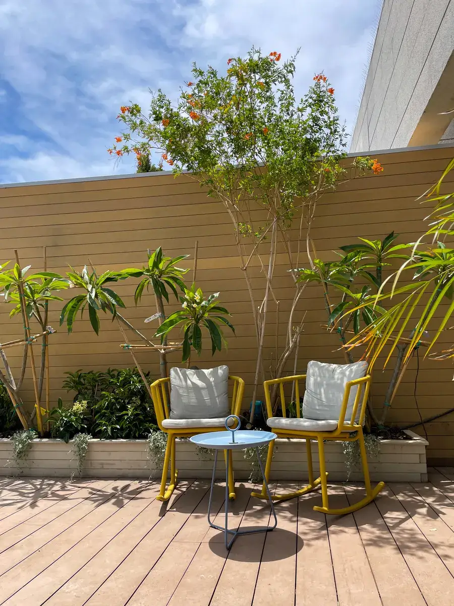
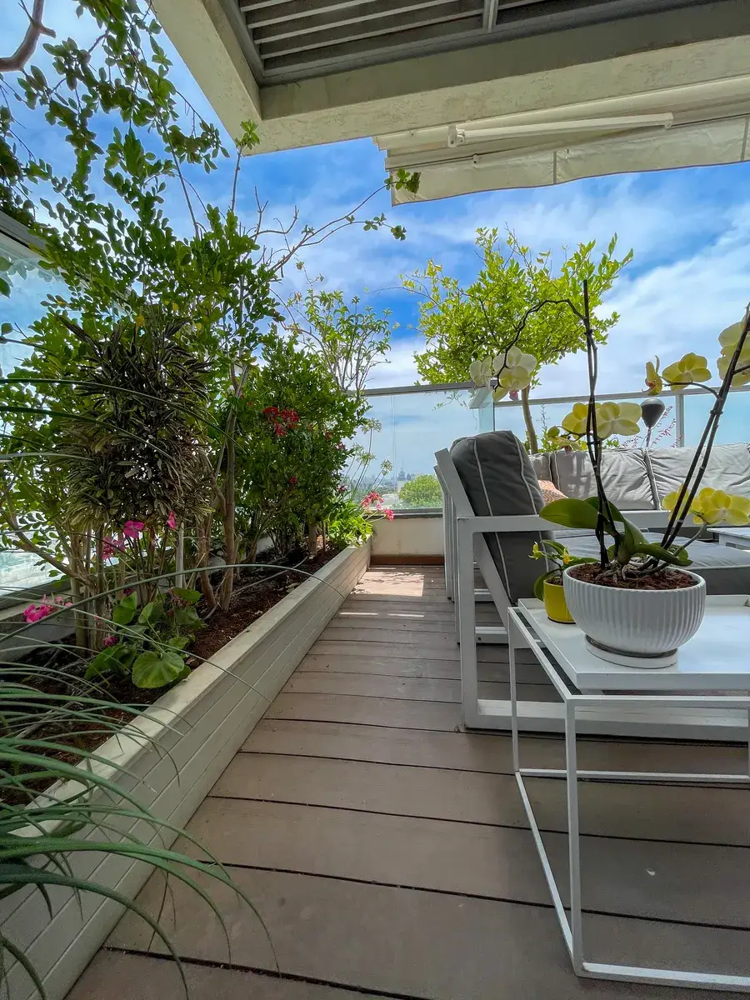

הפרויקטים שלנו
מרפסות שהפכו לגינות
שכונת המשתלה · תל אביב · וכל גוש דן






גם מרפסת של 8 מ"ר יכולה להיות גינה שגורמת לך לרצות לצאת אליה כל בוקר.
שלחו תמונה ב-WhatsAppשיחת אפיון ללא התחייבות · עונים בהקדם
מהבדיקה הראשונה של הכיוון והאור ועד ההדרכה ביום המסירה
בודקים כיוון, קומה ורמת אור לפני שמדברים על עיצוב
סל"ש, גבס, פיברגלס או עץ. לכל חומר יתרונות משלו
עשבי תיבול, שיחים פורחים, עצי נוי וצמחים רב-שנתיים
טפטוף אוטומטי חסכוני במים, שמשקה גם כשאתם בחופש
פתרונות תאורה לאווירת ערב, לפי הצורך
הטעות הכי נפוצה שאנשים עושים עם מרפסות: בוחרים צמחים לפי מה שנראה יפה בחנות, בלי להתחשב בתנאים של המרפסת שלהם. מרפסת מזרחית ומרפסת מערבית הן עולמות שונים לגמרי. בגן פרא מתחילים תמיד מהתנאים, ומשם בונים את הגינה הנכונה.
לפני כל בחירת צמח, שני דברים קובעים הכל:
| סוג | מה עובד |
|---|---|
| מרפסת קטנה (עד 15 מ"ר) | פתרונות חכמים לשטח מוגבל: עציצים אנכיים, שריגים |
| מרפסת גדולה (15–40 מ"ר) | עיצוב מלא עם אזורי ישיבה ושטח ירוק |
| מרפסת שמש (דרום/מערב) | צמחים מדבריים, לבנדר, גינת עשבי תיבול |
| מרפסת מוצלת (צפון) | שרכים, פוקסיות, פיקוס, אוהבי צל |
| גודל | טווח מחיר |
|---|---|
| קטנה (עד 15 מ"ר) | 3,000–12,000 ₪ |
| בינונית (15–30 מ"ר) | 12,000–30,000 ₪ |
| גדולה (30 מ"ר+) | 30,000–60,000 ₪ |
טיפ: שלחו לנו תמונה של המרפסת לפני הביקור. נגיע עם רעיונות ספציפיים כבר מהדקה הראשונה.
הפרויקטים שלנו
שכונת המשתלה · תל אביב · וכל גוש דן





מזרח, מערב, דרום או צפון — הצמחים נבחרים לתנאים, לא לקטלוג
חומרים שלא נסדקים, לא מחלידים ולא דוהים בשמש
טפטוף שמשקה בשעות הנכונות, גם כשאתם לא בבית
ברוב המרפסות — בבוקר מרפסת ריקה, בערב גינה
עוקבים אחרי הצמחים אחרי המסירה, ומחליפים מה שלא נקלט
ביקור חודשי שגוזם, מדשן ומשאיר את המרפסת במיטבה
בואו נדבר
שלחו לנו תמונה ואנחנו נגיד לכם מה אפשר לעשות
שלחו תמונה ב-WhatsAppעונים בהקדם · שאלון אפיון המרפסת ←